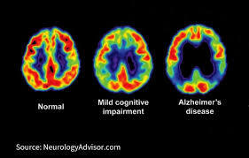
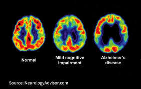

Introduction
- Alzheimer's is a degenerative brain disease.
- First symptom is unreliable memory.
- Has many side effects such as depression and aggression.
- Takes a very long time to develop.
The healthy human brain contains tens of billions of neurons. Those neurons’ main job is to process and transmit information using electrical and chemical signals all around the brain so the body can work properly. After the messages are sent to different parts of the brain they then travel to the muscles and organs of the body. Because of the complexity of the brain, there are known to be over 600 hundred different diseases in the brain having Alzheimer’s as one of the major mental health issues.
Alzheimer’s disease was first discovered by Dr. Alois Alzheimer in 1906, when he noticed an irregularity in the brain tissue of a woman who had died of an unusual mental illness. When the woman died Dr. Alzheimer examined her brain, he found out that her brain had abnormal clumps (plaques) and bundle tangles of fibers (neurofibrillary/tau tangles).
Alzheimer’s disease is an irreversible, proggressive brain disorder. Alzheimer’s slowly deteriorates the brain by killing neurons until it reaches a point where the brain no longer functions and the host dies. Alzheimer’s disease begins in the hippocampus and spreads until it reaches the whole brain. What Alzheimer’s does is it disrupts the communication between the neurons resulting in loss of function and cell death. Due to that, some side effects may include loss of memory, thinking skills, communication skills, and eventually the ability to carry out the most simplest tasks. Alzheimer’s symptoms usually first make an appearance between the mid 60s.
What is it?
Alzheimer's disease is the most common form of dementia. Alzheimer’s sleeping issues, extreme memory problems, mood disorders, and general confusion. It begins by triggering immune reactions to prevent nutrients from reaching the neurons. This in turn removes the neuron’s ability to communicate with other neurons. Deterioration generally begins in the hippocampus and the entorhinal cortex, the area of the brain where memories are stored. This makes memory problems one of the first signs of Alzheimer’s. After this, it begins to expand to other parts of the brain, breaking it down slowly. It expands to the cerebral cortex, amygdala, sensory cortex, and then finally removes long term memories in the hippocampus. During the process, the brain begins to shrink progressively making it less functional. By the final stage of Alzheimer’s, the damage around the spread has widespread, and the brain tissue has shrunk significantly. After this point, you can clearly see the difference between a brain that has been infected with Alzheimer’s, and one that is not. After enough deterioration has happened, the cerebral cortex is extremely neuron deficient, the patient will die.
Alzheimer’s is not a natural part of aging, although mild cognitive impairment is. Mild cognitive impairment (MCI) is when the patient has some problems with memory and logic, but is still able to live alone and carry out everyday tasks. Most Alzheimer's patients are first diagnosed with MCI, and are later diagnosed with Alzheimer’s as the symptoms get more severe. It usually takes around 8 - 10 years to go from MCI to Alzheimer’s. In early stages patients experience anxiety or depression, which later evolves into psychosis, agitation, or aggression. In the late stages patients become so forgetful and disoriented that they cannot live on their own. Older people with MCI are at greater risk of developing Alzheimer’s but not all of them do.
 
